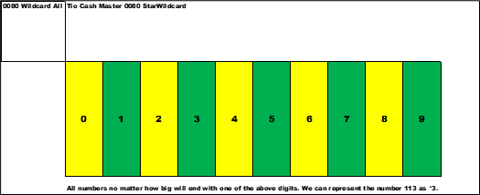
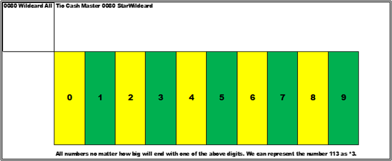
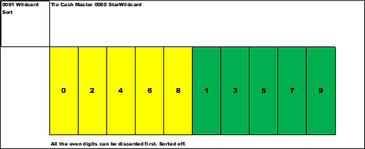
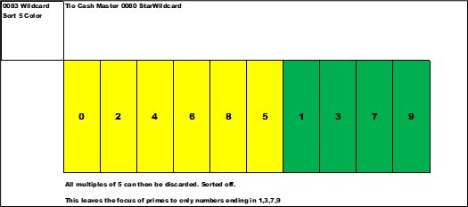
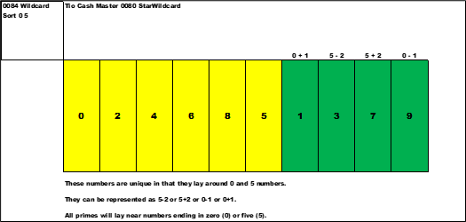
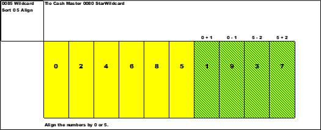
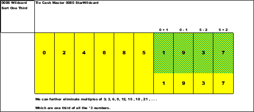
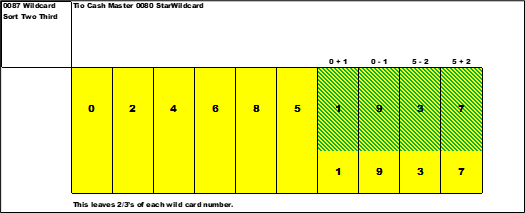
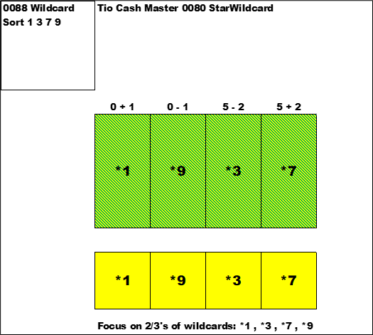

---
title: my home page title
layout: default
---
<div class="blurb">
<!-- -->       
<!-- ############################################################### -->	
    	
	  


<h1>Chapter 0080 Sort Wildcard Numbers</h1>


<p>Search for a sorting method to identify primes. All numbers
will end with one of the numbers listed below. These are the only possible
choices no matter how large the number.</p>

	  
<p></p>

<p></p>
  
	  


<p>*1 *3 *7 *9 - after sorting of unwanted numbers , these are
the numbers of interest to find primes from seven (7) and higher.</p>

<p>Let us go hunt for the sort and formula(s)</p>

<p>In the below slide are all the possible integers sorted by their least significant digit.</p>

<p>Once again remember *wildcard numbers.</p>

<p>There are ten piles of numbers. From *0 , *1 , *2 , . . . , *9. Yellow colored are even numbers , and green colored are odd numbers.</p>


<p></p>

<p></p>
  
<p>Next , let's sort the even (yellow) to the left ; and odd (green) to the right.</p>

<p></p>

<p></p>
  
<p>Next move the *5 next to the yellow and in front of the *1.
This is another sort based on eliminating the *5 from above. </p>


<p></p>

<p></p>
  

<p>The color of *5 in now yellow , we have discarded it. This leaves the numbers *1 and *3 and *7 and *9 for the hunt.</p>

<p></p>

<p></p>
  
<p>What is unique about these numbers is the location to and nearby five (5) and zero (0). It appears that all prime
numbers hover around *5 and *0.</p>

<p>So ,</p>

<p>*1 is *0 + 1</p>

<p>*3 is *5 - 2</p>

<p>*7 is *5 + 2</p>

<p>*9 is *0 – 1</p>

<p></p>

<p></p>
  

<p>Align the numbers by 0 or 5. </p>

<p>*1 is 0 + 1</p>

<p>*9 is 0 - 1</p>

<p>*3 is 5 - 2</p>

<p>*7 is 5 + 2</p>

<p></p>

<p></p>
  
<p>We can further sort out one-third (1/3) of the remaining numbers. 
Every third occurrence will be a multiple of three (3). I promise to get you to the end. Trust me . . .</p>


<p></p>

<p></p>
  

<p>So , we are left with a patch of numbers to look at. Some
serious number theorists will disagree , but we have eliminated a percentage of numbers.</p>

<p>50% for the *even numbers , 10 % for the *5 numbers. Then 33% of each of the rest. So , 33% of 10% 
for four occurrences. .333 x .10 x=4 =3D .1332 or approximately 13.32%</p>

<p>Added all up is 73.32% are gone. We will look at the balance , 26.68% of the numbers.</p>

<p>Take 8/30 =3D 26.68% (our eight (8) formulas divided by thirty (30) formulas).</p>

<p></p>

<p></p>
  

<p>Another view of the world. Sort off the 1/3 ’s.</p>

<p></p>

<p></p>
  


<!-- ############################################################### -->	

<p><o:p>&nbsp;</o:p></p>

<a href="https://cashfields.github.io/PrimeSuspects/html/Chapter 0020 Prime.html" target="_self">next</a>
<br>
<a href="https://cashfields.github.io/PrimeSuspects/index.html">index</a>
	   
<hr>

<!-- ############################################################### -->	
<!-- ##################### -->	
</div><!-- /.blurb -->
